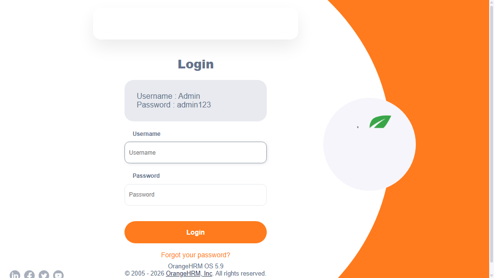

-
sampleTest1_user1_20-28-41
8:28:41 PM / 00:00:14:550 Fail
sampleTest1_user1_20-28-41
09.13.2026 8:28:41 PM 09.13.2026 8:28:56 PM 00:00:14:550 · #test-id=1Status Timestamp Details Skip 8:28:56 PM Test Skipped Fail 8:28:56 PM Info 8:28:56 PM 📂 Logs: Info 8:28:56 PM 📄 sampleTest1_user1_20-28-41.log -
sampleTest2_user1_20-28-41
8:28:41 PM / 00:00:13:227 Fail
sampleTest2_user1_20-28-41
09.13.2026 8:28:41 PM 09.13.2026 8:28:54 PM 00:00:13:227 · #test-id=2Status Timestamp Details Skip 8:28:54 PM Test Skipped Fail 8:28:54 PM -
sampleTest_user1_20-28-41
8:28:41 PM / 00:00:13:221 Fail
sampleTest_user1_20-28-41
09.13.2026 8:28:41 PM 09.13.2026 8:28:54 PM 00:00:13:221 · #test-id=3Status Timestamp Details Skip 8:28:54 PM Test Skipped Fail 8:28:54 PM Info 8:28:54 PM 📂 Logs: Info 8:28:54 PM 📄 sampleTest_user1_20-28-41.log -
sampleTest3_user1_20-28-41
8:28:41 PM / 00:00:13:213 Fail
sampleTest3_user1_20-28-41
09.13.2026 8:28:41 PM 09.13.2026 8:28:54 PM 00:00:13:213 · #test-id=4Status Timestamp Details Skip 8:28:54 PM Test Skipped Fail 8:28:54 PM -
sampleTest2_user1_20-28-57
8:28:57 PM / 00:00:18:999 Fail
sampleTest2_user1_20-28-57
09.13.2026 8:28:57 PM 09.13.2026 8:29:16 PM 00:00:18:999 · #test-id=5Status Timestamp Details Skip 8:29:16 PM Test Skipped Fail 8:29:16 PM -
sampleTest3_user1_20-28-57
8:28:57 PM / 00:00:19:020 Fail
sampleTest3_user1_20-28-57
09.13.2026 8:28:57 PM 09.13.2026 8:29:16 PM 00:00:19:020 · #test-id=6Status Timestamp Details Skip 8:29:16 PM Test Skipped Fail 8:29:16 PM -
sampleTest_user1_20-28-57
8:28:57 PM / 00:00:19:030 Fail
sampleTest_user1_20-28-57
09.13.2026 8:28:57 PM 09.13.2026 8:29:16 PM 00:00:19:030 · #test-id=7Status Timestamp Details Skip 8:29:16 PM Test Skipped Fail 8:29:16 PM Info 8:29:16 PM 📂 Logs: Info 8:29:16 PM 📄 sampleTest_user1_20-28-57.log -
sampleTest1_user1_20-29-00
8:29:00 PM / 00:00:16:384 Fail
sampleTest1_user1_20-29-00
09.13.2026 8:29:00 PM 09.13.2026 8:29:16 PM 00:00:16:384 · #test-id=8Status Timestamp Details Skip 8:29:16 PM Test Skipped Fail 8:29:16 PM Info 8:29:16 PM 📂 Logs: Info 8:29:16 PM 📄 sampleTest1_user1_20-29-00.log -
sampleTest2_user1_20-29-18
8:29:18 PM / 00:00:23:903 Fail
sampleTest2_user1_20-29-18
09.13.2026 8:29:18 PM 09.13.2026 8:29:42 PM 00:00:23:903 · #test-id=9Status Timestamp Details Fail 8:29:42 PM -
sampleTest3_user1_20-29-18
8:29:18 PM / 00:00:24:356 Fail
sampleTest3_user1_20-29-18
09.13.2026 8:29:18 PM 09.13.2026 8:29:43 PM 00:00:24:356 · #test-id=10Status Timestamp Details Fail 8:29:43 PM -
sampleTest_user1_20-29-18
8:29:18 PM / 00:00:23:205 Fail
sampleTest_user1_20-29-18
09.13.2026 8:29:18 PM 09.13.2026 8:29:42 PM 00:00:23:205 · #test-id=11Status Timestamp Details Fail 8:29:42 PM Info 8:29:42 PM 📂 Logs: Info 8:29:42 PM 📄 sampleTest_user1_20-29-18.log -
sampleTest1_user1_20-29-19
8:29:19 PM / 00:00:22:809 Fail
sampleTest1_user1_20-29-19
09.13.2026 8:29:19 PM 09.13.2026 8:29:42 PM 00:00:22:809 · #test-id=12Status Timestamp Details Fail 8:29:42 PM Info 8:29:42 PM 📂 Logs: Info 8:29:42 PM 📄 sampleTest1_user1_20-29-19.log -
sampleTest1_user2_20-29-44
8:29:44 PM / 00:00:18:850 Fail
sampleTest1_user2_20-29-44
09.13.2026 8:29:44 PM 09.13.2026 8:30:03 PM 00:00:18:850 · #test-id=13Status Timestamp Details Skip 8:30:03 PM Test Skipped Fail 8:30:03 PM Info 8:30:03 PM 📂 Logs: Info 8:30:03 PM 📄 sampleTest1_user2_20-29-44.log -
sampleTest_user2_20-29-45
8:29:45 PM / 00:00:18:273 Fail
sampleTest_user2_20-29-45
09.13.2026 8:29:45 PM 09.13.2026 8:30:03 PM 00:00:18:273 · #test-id=14Status Timestamp Details Skip 8:30:03 PM Test Skipped Fail 8:30:03 PM Info 8:30:03 PM 📂 Logs: Info 8:30:03 PM 📄 sampleTest_user2_20-29-45.log -
sampleTest2_user2_20-29-46
8:29:46 PM / 00:00:16:847 Fail
sampleTest2_user2_20-29-46
09.13.2026 8:29:46 PM 09.13.2026 8:30:03 PM 00:00:16:847 · #test-id=15Status Timestamp Details Skip 8:30:03 PM Test Skipped Fail 8:30:03 PM -
sampleTest3_user2_20-29-48
8:29:48 PM / 00:00:15:217 Fail
sampleTest3_user2_20-29-48
09.13.2026 8:29:48 PM 09.13.2026 8:30:03 PM 00:00:15:217 · #test-id=16Status Timestamp Details Skip 8:30:03 PM Test Skipped Fail 8:30:03 PM -
sampleTest_user2_20-30-06
8:30:06 PM / 00:00:15:154 Fail
sampleTest_user2_20-30-06
09.13.2026 8:30:06 PM 09.13.2026 8:30:21 PM 00:00:15:154 · #test-id=17Status Timestamp Details Skip 8:30:21 PM Test Skipped Fail 8:30:21 PM Info 8:30:21 PM 📂 Logs: Info 8:30:21 PM 📄 sampleTest_user2_20-30-06.log -
sampleTest3_user2_20-30-06
8:30:06 PM / 00:00:15:203 Fail
sampleTest3_user2_20-30-06
09.13.2026 8:30:06 PM 09.13.2026 8:30:21 PM 00:00:15:203 · #test-id=18Status Timestamp Details Skip 8:30:21 PM Test Skipped Fail 8:30:21 PM -
sampleTest1_user2_20-30-06
8:30:06 PM / 00:00:15:432 Fail
sampleTest1_user2_20-30-06
09.13.2026 8:30:06 PM 09.13.2026 8:30:21 PM 00:00:15:432 · #test-id=19Status Timestamp Details Skip 8:30:21 PM Test Skipped Fail 8:30:21 PM Info 8:30:21 PM 📂 Logs: Info 8:30:21 PM 📄 sampleTest1_user2_20-30-06.log -
sampleTest2_user2_20-30-06
8:30:06 PM / 00:00:15:383 Fail
sampleTest2_user2_20-30-06
09.13.2026 8:30:06 PM 09.13.2026 8:30:21 PM 00:00:15:383 · #test-id=20Status Timestamp Details Skip 8:30:21 PM Test Skipped Fail 8:30:21 PM -
sampleTest2_user2_20-30-31
8:30:31 PM / 00:00:41:869 Fail
sampleTest2_user2_20-30-31
09.13.2026 8:30:31 PM 09.13.2026 8:31:13 PM 00:00:41:869 · #test-id=21Status Timestamp Details Fail 8:31:13 PM -
sampleTest1_user2_20-30-31
8:30:31 PM / 00:00:41:165 Fail
sampleTest1_user2_20-30-31
09.13.2026 8:30:31 PM 09.13.2026 8:31:13 PM 00:00:41:165 · #test-id=22Status Timestamp Details Fail 8:31:13 PM Info 8:31:13 PM 📂 Logs: Info 8:31:13 PM 📄 sampleTest1_user2_20-30-31.log -
sampleTest3_user2_20-30-36
8:30:36 PM / 00:00:36:386 Fail
sampleTest3_user2_20-30-36
09.13.2026 8:30:36 PM 09.13.2026 8:31:13 PM 00:00:36:386 · #test-id=23Status Timestamp Details Fail 8:31:13 PM -
sampleTest_user2_20-30-54
8:30:54 PM / 00:00:18:469 Fail
sampleTest_user2_20-30-54
09.13.2026 8:30:54 PM 09.13.2026 8:31:13 PM 00:00:18:469 · #test-id=24Status Timestamp Details Fail 8:31:13 PM Info 8:31:13 PM 📂 Logs: Info 8:31:13 PM 📄 sampleTest_user2_20-30-54.log -
sampleTest4_user1_20-31-14
8:31:14 PM / 00:00:18:485 Fail
sampleTest4_user1_20-31-14
09.13.2026 8:31:14 PM 09.13.2026 8:31:33 PM 00:00:18:485 · #test-id=25Status Timestamp Details Skip 8:31:33 PM Test Skipped Fail 8:31:33 PM -
sampleTest5_user1_20-31-15
8:31:15 PM / 00:00:17:750 Fail
sampleTest5_user1_20-31-15
09.13.2026 8:31:15 PM 09.13.2026 8:31:33 PM 00:00:17:750 · #test-id=26Status Timestamp Details Skip 8:31:33 PM Test Skipped Fail 8:31:33 PM -
verifyLoginTest1_user1_20-31-16
8:31:16 PM / 00:00:18:040 Fail
verifyLoginTest1_user1_20-31-16
09.13.2026 8:31:16 PM 09.13.2026 8:31:34 PM 00:00:18:040 · #test-id=27Status Timestamp Details Skip 8:31:34 PM Test Skipped Fail 8:31:34 PM Info 8:31:34 PM 📸 Screenshots: Info 8:31:34 PM 
-
verifyLoginTest_{COL1=ONE}_20-31-17
8:31:17 PM / 00:00:15:412 Fail
verifyLoginTest_{COL1=ONE}_20-31-17
09.13.2026 8:31:17 PM 09.13.2026 8:31:33 PM 00:00:15:412 · #test-id=28Status Timestamp Details Skip 8:31:33 PM Test Skipped Fail 8:31:33 PM Info 8:31:33 PM 📂 Logs: Info 8:31:33 PM 📄 verifyLoginTest_{COL1=ONE}_20-31-17.log Info 8:31:33 PM 📸 Screenshots: Info 8:31:33 PM 
-
sampleTest4_user1_20-31-34
8:31:34 PM / 00:00:21:124 Fail
sampleTest4_user1_20-31-34
09.13.2026 8:31:34 PM 09.13.2026 8:31:55 PM 00:00:21:124 · #test-id=29Status Timestamp Details Skip 8:31:55 PM Test Skipped Fail 8:31:55 PM -
sampleTest5_user1_20-31-35
8:31:35 PM / 00:00:19:662 Fail
sampleTest5_user1_20-31-35
09.13.2026 8:31:35 PM 09.13.2026 8:31:55 PM 00:00:19:662 · #test-id=30Status Timestamp Details Skip 8:31:55 PM Test Skipped Fail 8:31:55 PM -
verifyLoginTest_{COL1=ONE}_20-31-36
8:31:36 PM / 00:00:17:486 Fail
verifyLoginTest_{COL1=ONE}_20-31-36
09.13.2026 8:31:36 PM 09.13.2026 8:31:54 PM 00:00:17:486 · #test-id=31Status Timestamp Details Skip 8:31:54 PM Test Skipped Fail 8:31:54 PM Info 8:31:54 PM 📂 Logs: Info 8:31:54 PM 📄 verifyLoginTest_{COL1=ONE}_20-31-36.log Info 8:31:54 PM 📸 Screenshots: Info 8:31:54 PM 
-
verifyLoginTest1_user1_20-31-41
8:31:41 PM / 00:00:15:289 Fail
verifyLoginTest1_user1_20-31-41
09.13.2026 8:31:41 PM 09.13.2026 8:31:56 PM 00:00:15:289 · #test-id=32Status Timestamp Details Skip 8:31:56 PM Test Skipped Fail 8:31:56 PM Info 8:31:56 PM 📸 Screenshots: Info 8:31:56 PM 
-
verifyLoginTest_{COL1=ONE}_20-31-54
8:31:54 PM / 00:00:14:204 Fail
verifyLoginTest_{COL1=ONE}_20-31-54
09.13.2026 8:31:54 PM 09.13.2026 8:32:09 PM 00:00:14:204 · #test-id=33Status Timestamp Details Fail 8:32:09 PM Info 8:32:09 PM 📂 Logs: Info 8:32:09 PM 📄 verifyLoginTest_{COL1=ONE}_20-31-54.log Info 8:32:09 PM 📸 Screenshots: Info 8:32:09 PM 
-
sampleTest5_user1_20-31-57
8:31:57 PM / 00:00:18:249 Fail
sampleTest5_user1_20-31-57
09.13.2026 8:31:57 PM 09.13.2026 8:32:15 PM 00:00:18:249 · #test-id=34Status Timestamp Details Fail 8:32:15 PM -
sampleTest4_user1_20-31-57
8:31:57 PM / 00:00:18:157 Fail
sampleTest4_user1_20-31-57
09.13.2026 8:31:57 PM 09.13.2026 8:32:15 PM 00:00:18:157 · #test-id=35Status Timestamp Details Fail 8:32:15 PM -
verifyLoginTest1_user1_20-32-00
8:32:00 PM / 00:00:16:467 Fail
verifyLoginTest1_user1_20-32-00
09.13.2026 8:32:00 PM 09.13.2026 8:32:16 PM 00:00:16:467 · #test-id=36Status Timestamp Details Fail 8:32:16 PM Info 8:32:16 PM 📸 Screenshots: Info 8:32:16 PM -
verifyLoginTest_{COL1=ONEONE}_20-32-10
8:32:10 PM / 00:00:13:580 Fail
verifyLoginTest_{COL1=ONEONE}_20-32-10
09.13.2026 8:32:10 PM 09.13.2026 8:32:24 PM 00:00:13:580 · #test-id=37Status Timestamp Details Skip 8:32:24 PM Test Skipped Fail 8:32:24 PM Info 8:32:24 PM 📂 Logs: Info 8:32:24 PM 📄 verifyLoginTest_{COL1=ONEONE}_20-32-10.log Info 8:32:24 PM 📸 Screenshots: Info 8:32:24 PM 
-
sampleTest4_user2_20-32-17
8:32:17 PM / 00:00:19:929 Fail
sampleTest4_user2_20-32-17
09.13.2026 8:32:17 PM 09.13.2026 8:32:36 PM 00:00:19:929 · #test-id=38Status Timestamp Details Skip 8:32:36 PM Test Skipped Fail 8:32:36 PM -
sampleTest5_user2_20-32-20
8:32:20 PM / 00:00:18:744 Fail
sampleTest5_user2_20-32-20
09.13.2026 8:32:20 PM 09.13.2026 8:32:39 PM 00:00:18:744 · #test-id=39Status Timestamp Details Skip 8:32:39 PM Test Skipped Fail 8:32:39 PM -
verifyLoginTest1_user2_20-32-22
8:32:22 PM / 00:00:17:462 Fail
verifyLoginTest1_user2_20-32-22
09.13.2026 8:32:22 PM 09.13.2026 8:32:39 PM 00:00:17:462 · #test-id=40Status Timestamp Details Skip 8:32:39 PM Test Skipped Fail 8:32:39 PM Info 8:32:39 PM 📸 Screenshots: Info 8:32:39 PM 
-
verifyLoginTest_{COL1=ONEONE}_20-32-26
8:32:26 PM / 00:00:13:510 Fail
verifyLoginTest_{COL1=ONEONE}_20-32-26
09.13.2026 8:32:26 PM 09.13.2026 8:32:39 PM 00:00:13:510 · #test-id=41Status Timestamp Details Skip 8:32:39 PM Test Skipped Fail 8:32:39 PM Info 8:32:39 PM 📂 Logs: Info 8:32:39 PM 📄 verifyLoginTest_{COL1=ONEONE}_20-32-26.log Info 8:32:39 PM 📸 Screenshots: Info 8:32:39 PM 
-
sampleTest4_user2_20-32-37
8:32:37 PM / 00:00:12:783 Fail
sampleTest4_user2_20-32-37
09.13.2026 8:32:37 PM 09.13.2026 8:32:50 PM 00:00:12:783 · #test-id=42Status Timestamp Details Skip 8:32:50 PM Test Skipped Fail 8:32:50 PM -
verifyLoginTest1_user2_20-32-41
8:32:41 PM / 00:00:16:365 Fail
verifyLoginTest1_user2_20-32-41
09.13.2026 8:32:41 PM 09.13.2026 8:32:58 PM 00:00:16:365 · #test-id=43Status Timestamp Details Skip 8:32:58 PM Test Skipped Fail 8:32:58 PM Info 8:32:58 PM 📸 Screenshots: Info 8:32:58 PM 
-
verifyLoginTest_{COL1=ONEONE}_20-32-41
8:32:41 PM / 00:00:16:252 Fail
verifyLoginTest_{COL1=ONEONE}_20-32-41
09.13.2026 8:32:41 PM 09.13.2026 8:32:58 PM 00:00:16:252 · #test-id=44Status Timestamp Details Fail 8:32:58 PM Info 8:32:58 PM 📂 Logs: Info 8:32:58 PM 📄 verifyLoginTest_{COL1=ONEONE}_20-32-41.log Info 8:32:58 PM 📸 Screenshots: Info 8:32:58 PM 
-
sampleTest5_user2_20-32-42
8:32:42 PM / 00:00:14:405 Fail
sampleTest5_user2_20-32-42
09.13.2026 8:32:42 PM 09.13.2026 8:32:56 PM 00:00:14:405 · #test-id=45Status Timestamp Details Skip 8:32:56 PM Test Skipped Fail 8:32:56 PM -
sampleTest4_user2_20-32-51
8:32:51 PM / 00:00:14:018 Fail
sampleTest4_user2_20-32-51
09.13.2026 8:32:51 PM 09.13.2026 8:33:05 PM 00:00:14:018 · #test-id=46Status Timestamp Details Fail 8:33:05 PM -
sampleTest5_user2_20-32-58
8:32:58 PM / 00:00:16:374 Fail
sampleTest5_user2_20-32-58
09.13.2026 8:32:58 PM 09.13.2026 8:33:14 PM 00:00:16:374 · #test-id=47Status Timestamp Details Fail 8:33:14 PM -
verifyLoginTest1_user2_20-32-59
8:32:59 PM / 00:00:15:910 Fail
verifyLoginTest1_user2_20-32-59
09.13.2026 8:32:59 PM 09.13.2026 8:33:15 PM 00:00:15:910 · #test-id=48Status Timestamp Details Fail 8:33:15 PM Info 8:33:15 PM 📸 Screenshots: Info 8:33:15 PM 
-
verifyLoginTest2_user1_20-33-00
8:33:00 PM / 00:00:14:488 Fail
verifyLoginTest2_user1_20-33-00
09.13.2026 8:33:00 PM 09.13.2026 8:33:14 PM 00:00:14:488 · #test-id=49Status Timestamp Details Skip 8:33:14 PM Test Skipped Fail 8:33:14 PM Info 8:33:14 PM 📂 Logs: Info 8:33:14 PM 📄 verifyLoginTest2_user1_20-33-00.log -
verifyLoginTest2_user1_20-33-15
8:33:15 PM / 00:00:12:695 Fail
verifyLoginTest2_user1_20-33-15
09.13.2026 8:33:15 PM 09.13.2026 8:33:28 PM 00:00:12:695 · #test-id=50Status Timestamp Details Skip 8:33:28 PM Test Skipped Fail 8:33:28 PM Info 8:33:28 PM 📂 Logs: Info 8:33:28 PM 📄 verifyLoginTest2_user1_20-33-15.log -
verifyLoginTest2_user1_20-33-30
8:33:30 PM / 00:00:12:630 Fail
verifyLoginTest2_user1_20-33-30
09.13.2026 8:33:30 PM 09.13.2026 8:33:43 PM 00:00:12:630 · #test-id=51Status Timestamp Details Fail 8:33:43 PM Info 8:33:43 PM 📂 Logs: Info 8:33:43 PM 📄 verifyLoginTest2_user1_20-33-30.log -
verifyLoginTest2_user2_20-33-44
8:33:44 PM / 00:00:13:349 Fail
verifyLoginTest2_user2_20-33-44
09.13.2026 8:33:44 PM 09.13.2026 8:33:57 PM 00:00:13:349 · #test-id=52Status Timestamp Details Skip 8:33:57 PM Test Skipped Fail 8:33:57 PM Info 8:33:57 PM 📂 Logs: Info 8:33:57 PM 📄 verifyLoginTest2_user2_20-33-44.log -
verifyLoginTest2_user2_20-33-59
8:33:59 PM / 00:00:13:168 Fail
verifyLoginTest2_user2_20-33-59
09.13.2026 8:33:59 PM 09.13.2026 8:34:13 PM 00:00:13:168 · #test-id=53Status Timestamp Details Skip 8:34:13 PM Test Skipped Fail 8:34:13 PM Info 8:34:13 PM 📂 Logs: Info 8:34:13 PM 📄 verifyLoginTest2_user2_20-33-59.log -
verifyLoginTest2_user2_20-34-14
8:34:14 PM / 00:00:12:773 Fail
verifyLoginTest2_user2_20-34-14
09.13.2026 8:34:14 PM 09.13.2026 8:34:26 PM 00:00:12:773 · #test-id=54Status Timestamp Details Fail 8:34:26 PM Info 8:34:26 PM 📂 Logs: Info 8:34:26 PM 📄 verifyLoginTest2_user2_20-34-14.log
-
org.openqa.selenium.TimeoutException
54 tests
org.openqa.selenium.TimeoutException
54 failed
Started
Sep 13, 2026 08:28:24 PM
Ended
Sep 13, 2026 08:34:27 PM
Tests Passed
0
Tests Failed
54
Tests
Log events
Timeline